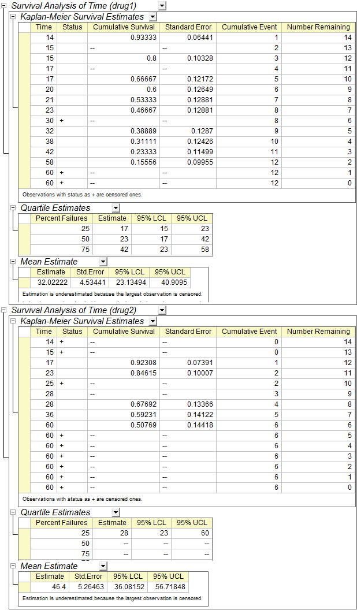

Kaplan-Meier-Schätzer
Kaplan-Meier-Estimator
Zusammenfassung
Die Lebensdaueranalyse ist die Untersuchung der Zeit bis zu einem bestimmten Ereignis, z.B. dem Eintritt des Todes oder dem Fehlschlagen einer Behandlung. Im Bereich der empirischen Sozialwissenschaften wird sie als Verweildaueranalyse oder auch Verlaufsdaten- oder Ereignisanalyse bezeichnet, im Bereich der Ingenieurwissenschaften als Zuverlässigkeitsanalyse.
Die Überlebensfunktion S(t) kann die Überlebensrate zum Zeitpunkt t beschreiben. Außerdem ist S(t) = 1-F(f), wobei F(t) die kumulative Verteilungsfunktion der Ausfallzeiten ist. Die Hazardfunktion h(t) (auch bekannt als Ausfallrate, Hazardrate oder Force of Mortality) ist das Verhältnis der Wahrscheinlichkeitsdichtefunktion P(t) von F(t) zur Überlebenszeitfunktion S(t).
Mit dem Kaplan–Meier- oder auch Produkt-Limit-Schätzer ist eine Schätzung von S(t) und h(t) aus einer Stichprobe von Ausfallzeiten möglich, die zunehmend rechtszensiert sein können.
Was Sie lernen werden
Dieses Tutorial zeigt Ihnen, wie Sie:
- Kaplan-Meier-Schätzung durchführen
- Wie diese Ergebnisse zu interpretieren sind
Schritte
Kaplan-Meier-Schätzer ausführen
Wissenschaftler suchen nach einem besseren Medikament zur Unterstützung der Widerstandsfähigkeit gegen Krebs. Nachdem Ratten krebserregendem DMBA ausgesetzt wurden, wurden verschiedene Medikamente an unterschiedlichen Gruppen von Ratten getestet und ihr Überlebensstatus für die ersten 60 Stunden erfasst. In der ersten Gruppe, die mit Medikament 1 behandelt worden war, überlebten 15 Ratten, nachdem sie DMBA ausgesetzt waren. Beachten Sie, dass 1 Ratte in der 30. Stunde zwar starb, allerdings nicht an einem Karzinom. In der zweiten mit Medikament 2 behandelten Gruppe überlebten 15 Ratten. Beachten Sie, dass in der 14. Stunde, 15.Stunde und 25. Stunde jeweils 1 Ratte starb, allerdings nicht an einem Karzinom. Die Aufzeichnungen der zwei Gruppen von Ratten sind in der Datei /Samples/Statistics/SurvivedRats.dat sortiert. Beachten Sie folgende Bedeutungen von Status: 0 = tot, aber nicht aufgrund eines Karzinoms, 1 = tot aufgrund eines Karzinoms, 2 = am Leben.
- Öffnen Sie ein leeres Arbeitsblatt. Wählen Sie Hilfe: Ordner öffnen: Sample-Ordner ... im Menü, um den Ordner "Samples" zu öffnen. Öffnen Sie in diesem Ordner den Unterordner Statistics. Dort befindet sich die Datei SurvivedRats.dat. Ziehen Sie diese Datei per Drag&Drop in das leere Arbeitsblatt, um sie zu importieren.
- Analysieren Sie den Datensatz mit Hilfe des Kaplan-Meier-Schätzers. Klicken Sie im Menü auf Statistik: Lebensdaueranalyse: Kaplan-Meier-Schätzer, um das Dialogfeld zu öffnen.
- Legen Sie die Spalten A, B und C als Zeitbereich, Zensorbereich bzw. Gruppierungsbereich auf der Registerkarte Eingabe fest.
- Setzen Sie 0 und 2 als Zensierungswerte.
- Aktivieren Sie in der Gruppe Lebensdauertabellen die Kontrollkästchen Ereignis- und Zensorwertezusammenfassung, Überlebensschätzer, Quartilschätzer und Mittelwertschätzer.
- Aktivieren Sie die Kontrollkästchen Überleben ,1 - Überlebensfunktion und Hazard auf der Registerkarte Überlebensdiagramme.
- Aktivieren Sie das Kontrollkästchen Log-Rang, Breslow und Tarone-Ware auf der Registerkarte Gleichheitstest.
- Klicken Sie auf OK.
Ergebnisse interpretieren
Gehen Sie zum Arbeitsblatt KaplanMeier1 für den Analysebericht:
- In der Tabelle "Zusammenfassung der Ereignis- und zensierten Werten" können wir sehen, dass Zensiert = 3 und Prozent zensiert = 0,2 für die Gruppe Medikament 1 und Zensiert = 9 und Prozent zensiert = 0,6 für die Gruppe von Medikament 2 ist.
- Die Tabelle "Kaplan-Meier-Überlebensschätzer" zeigt eine deskriptive Vorgehensweise zum Untersuchen der Verteilung von den Variablen Zeit-zu-Ereignis. Wir können auch die Verteilung der Stufen einer Faktorvariablen vergleichen. Die Tabellen für Quartilschätzer und Mittelwertschätzer bieten Schätzwerte und Konfidenzintervalle von Quartil und Mittelwert.
- 
- Die Überlebenskurve bietet eine visuelle Darstellung der Lebensdauertabellen. Eine Zeichnung der Kaplan-Meier-Schätzung der Überlebensfunktion ist eine Reihe von horizontalen Stufen mit abnehmendem Betrag. In dem Diagramm fällt die Überlebenskurve schneller ab und die Überlebensrate ist kleiner. Dieses Überlebensfunktionsdiagramm zeigt den Anteile der Einzelnen, die zu jeder Stunde in der Gruppe von Medikament 1 und in der Gruppe von Medikament 2 überleben. Außerdem fällt die Überlebenskurve von Medikament immer schneller ab. Daher können wir schlussfolgern, dass sich Medikament 2 besser für den Einsatz gegen Krebs eignet.
- Dieselbe Schlussfolgerung können wir mit Hilfe der 1-Überlebensfunktion aus dem Überlebensfunktionsdiagramm ziehen.
- Die Hazardrate ist die Wahrscheinlichkeit, dass ein gegebenes Ereignis zu einem bestimmten Zeitpunkt auftritt. Sie kann gegen die Zeit auf der X-Achse gezeichnet werden, so dass ein Diagramm der Hazardrate über die Zeit gezeichnet wird. Die Hazardfunktion ist die Gleichung, die diese gezeichnete Linie beschreibt. Aus dem Diagramm erhalten wir die Information, dass die Hazardrate der Gruppe von Medikament 1 größer ist als die von Gruppe Medikament 2. Daher können wir schlussfolgern, dass Medikament 2 die bessere Variante gegen Krebs ist.
- Zum Durchführen von Gesamttests der Gleichheit von Überlebenszeiten über Gruppen enthält Origin drei Methoden:
-
- Log-Rang: Testet die Gleichheit der Überlebensfunktionen indem alle Zeitpunkte auf die gleiche Weise gewichtet werden.
- Breslow: Testet die Gleichheit der Überlebensfunktionen, indem alle Zeitpunkte nach der Anzahl der gefährdeten Fälle zu jedem Zeitpunkt gewichtet werden.
- Tarone-Ware: Testet die Gleichheit der Überlebensfunktionen, indem alle Zeitpunkte nach der Quadratwurzel der Anzahl der gefährdeten Fälle zu jedem Zeitpunkt gewichtet werden.
- Da die Signifikanzwerte alle kleiner sind als 0,05, gibt es eine statistisch signifikante Differenz zwischen zwei Behandlungen (Medikament 1 und Medikament 2) in der Überlebenszeit.